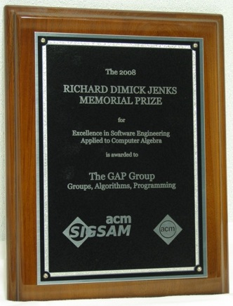

|
Ukrainian GAP User Group |
|
16 августа 2011 г.
Вслед за обновлением архивов пакетов на сайте GAP до версий по состоянию на 11 августа 2011 г. был обновлен и экспериментальный дистрибутив системы GAP для Windows. Новый архив пакетов находится здесь. 28 июля 2010 г. Авторы пакета simpcomp - A GAP Toolbox for Simplicial Complexes Felix Effenberger и Jonathan Spreer из Университета г.Штуттгарт получили приз за лучшую презентацию программного обеспечения на Международном симпозиуме по символьным и алгебраическим вычислениям. Кроме этого, там же были представлены два других пакета для GAP (LocalizeRingForHomalg, SCSCP, а в двух других презентциях (TRIP, SymGrid-Par) были продемонстрированы интерфейсы для обращения к GAP из других программ. Программа и тезисы презентаций находятся здесь. 31 марта 2009 г. Совет GAP объявил о принятии пакета FORMS (авторы - John Bamberg и Jan De Beule) для работы с полуторалинейными и квадратичными формами. Пакет FORMS доступен на сайте системы GAP, а также в составе архива пакетов для Windows. 23 февраля 2009 г. Система GAP получила Richard D. Jenks Memorial Prize  The GAP Group, объединяющая разработчиков системы GAP, стала лауреатом мемориальной премии имени Ричарда Дженкса (полное название - ACM/SIGSAM Richard Dimick Jenks Memorial Prize for Excellence in Software Engineering applied to Computer Algebra) "за разработку системы GAP для вычислительной теории групп и вычислительной дискретной алгебры". Церемония вручения премии состоялась в июле 2008 г. на Международном симпозиуме по символьным и алгебраическим вычислениям в Линце (Австрия). Официальное сообщение о решении ACM/SIGSAM опубликовано в ACM Communications in Computer Algebra. 16 февраля 2009 г. Украинский математический конгресс - 2009 Украинский математический конгресс - 2009 состоится в Киеве 27-29 августа 2009 г. Украинская группа пользователей GAP поддерживает зеркало сайта конгресса, которое находится здесь. 18 декабря 2008 г. Выход GAP 4.4.12 Вышла очередная версия 4.4.12 системы GAP (Версия 4.4.11 была выпущена в начале декабря 2008 г. и заменена на 4.4.12 в связи с возможными сбоями при вводе команд, разбитых на несколько строк). Пользователям предыдущих версий достаточно произвести обновление до версии 4.4.12, если они используют одну из предыдущих версий GAP 4.4. Если же используется GAP 4.3 или более ранняя версия, то вместо обновления необходима полная инсталляция. В GAP 4.4.11 - 4.4.12 были не только исправлены ошибки, обнаруженные в предыдущих версиях, но также уточнена документация и расширена функциональность (подробная информация на сайте GAP находится здесь). В частности, предлагается два варианта исполнимых файлов для Windows, оба из которых поддерживают динамически загружамые модули и дают возможность работать с пакетами Browse, IO и EDIM в Windows. Вышли также новые версии пакетов FR, HAP, HAPcryst, polymaking, RDS, Repsn и SONATA. В связи с этим на нашем сайте обновлен раздел "Инсталляция" и экспериментальный дистрибутив GAP для Windows. Ввиду того, что в большинстве случаев загрузка и инсталляция полной версии системы GAP не представляет проблем для современных пользователей, начиная с версии 4.4.11 прекращена поддержка мини-дистрибутива системы GAP с усеченной функциональностью, который предлагался на нашем сайте в течение нескольких лет. 18 декабря 2008 г. Переезд одного из зеркал нашего сайта Создано зеркало на сайте системы GAP и прекращена поддержка зеркала в Запорожском национальном университете, которое функционировало с 2001 года. 19 июля 2008 г. В архив пакетов на сайте системы GAP и в дистрибутиве GAP для Windows добавлена версия 2.0 пакета orb, предлагающего различные методы для перечисления орбит (авторы - Jürgen Müller, Max Neunhöffer и Felix Noeske). 16 мая 2008 г. На нашем сайте опубликована новая редакция методического пособия по системе GAP. Исходный текст переведен в формат GAPDoc, позволяющий создавать документацию в форматах PDF и HTML из единого исходного кода с помощью одноименного пакета для системы GAP, а также автоматически проверять содержащиеся в документации примеры, которые теперь соответствуют версии GAP 4.4.10. Данный документ доступен также в PDF. 13 мая 2008 г. В архивы пакетов на сайтах системы GAP и дистрибутива GAP для Windows добавлены пакет linboxing (автор - Paul Smith; текущая версия 0.5.1) для доступа к функциям C++ библиотеки для линейной алгебры LinBox на уровне ядра GAP и пакет MONOID (автор James Mitchell; текущая версия 3.1) для работы с полугруппами преобразований (этот пакет является обновленной для GAP4 версией одноименного пакета для GAP3, авторы которого - Goetz Pfeiffer, Steve Linton, Edmund Robertson и Nik Ruskuc). Кроме того, обновлен до версии 3.5 пакет GUAVA. 15 марта 2008 г. В архивы пакетов на сайтах системы GAP и дистрибутива GAP для Windows добавлен пакет polymaking (автор - Marc Röder; текущая версия 0.7.1). Пакет содержит функции для работы с системой вычислительной геометрии polymake. 25 февраля 2008 г. На нашем сайте открыт раздел "Препринты", в котором опубликован препринт 2008/1 авторов Пилявской О.С., Шатохиной Ю.В., Коновалова A.Б. "Исследование свойств циклических подгрупп 2-групп малых порядков с помощью системы компьютерной алгебры GAP". 22 февраля 2008 г. Вышла новая версия 1.1.1 пакета AutomGrp (авторы - Евгений Мунтян и Дмитрий Савчук). Пакет включает в себя алгоритмы для работы с конечно порожденными самоподобными группами и полугруппами. Некоторые алгоритмы работают только в классе групп и полугрупп, порожденных конечными автоматами. 7 февраля 2008 г. Совет GAP объявил о принятии пакетов RDS (автор - Marc Röder) и Wedderga (авторы - Ángel del Río, Osnel Broche Cristo, Aurora Olivieri, Gabriela Olteanu and и Александр Коновалов). Пакет RDS находит относительные разностные множества (relative difference sets) в неабелевых группах. Пакет Wedderga вычисляет разложение Веддербарна и примитивные центральные идемпотенты полупростых групповых алгебр конечных групп над числовыми и конечными полями, а также содержит функции для построения скрещенных произведений групп и колец. Перечисленные пакеты доступны на сайте системы GAP, а также в составе архива пакетов для Windows. 23 января 2008 г. Совет GAP объявил о принятии пакета Circle (авторы - Panagiotis Soules и Александр Коновалов) для построения присоединенных групп конечных колец. Пакет Circle доступен на сайте системы GAP, а также в составе архива пакетов для Windows. 28 октября 2007 г. Совет GAP объявил о принятии пакета Cubefree (автор - Heiko Dietrich) для построения с точностью до изоморфизма всех групп заданного свободного от кубов порядка, и пакета liealgdb (авторы - Willem de Graaf и Csaba Schneider), содержащего библиотеку алгебр Ли малых размерностей. Перечисленные пакеты доступны на сайте системы GAP, а также в составе архива пакетов для Windows. 13 августа 2007 г. Nilmat - пакет для работы с нильпотентными матричными группами Совет GAP объявил о принятии пакета Nilmat после успешного прохождения им рецензирования. Авторы пакета - Алла Детинко (Galway), Bettina Eick (Braunschweig), Dane Flannery (Galway). Пакет доступен на сайте системы GAP, а также на странице пакета. Пакет Nilmat содержит функции для работы с нильпотентными группами матриц над конечными полями, а также над полем рациональных чисел. С его помощью можно определить, является ли произвольная заданная матричная группа нильпотентной. В случае нильпотентной группы пакет вычисляет порядок группы и ее различные подгруппы (например, Силовские p-подгруппы) намного быстрее, чем стандартные функции системы GAP. Пакет также предоставляет возможность построения различных примеров нильпотентных матричных групп, таких как максимальные абсолютно неприводимые нильпотентные группы и примитивные нильпотентные группы. 10 июля 2007 г. Семинар авторов пакетов GAP Технический Университет г.Брауншвейг, Германия, 11-15 сентября 2007 г. Данный семинар предназначен для исследователей, имеющих некоторый опыт работы с системой, и заинтересованных в разработке более совершенных программ или пакетов для системы GAP. Доклады первой половины дня будут посвящены алгоритмам, их реализациям в системе GAP и приложениям. Во второй половине дня запланированы лекции по ключевым аспектам разработки системы GAP, практические занятия с советами по отладке и оптимизации программ для GAP, дискуссии по будущим направлениям развития системы. Более подробная информаци (включая слайды докладов) находится здесь. 8 июля 2007 г. Вышла новая версия 1.3 пакета AtlasRep (автор - Thomas Breuer) который предоставляет интерфейс к знаменитому Атласу представлений конечных групп. Наиболее важной особенностью новой версии является то, что доступ к удаленным данным снова работает после переноса их на новый сервер. Дальнейшая информация может быть найдена на странице пакета. Список всех отличий новой версии перечислен в документации. 8 июля 2007 г. Совет GAP объявил о принятии пакета RadiRoot (автор - Andreas Distler). Пакет RadiRoot может вычислять и отображать корни разрешимого в радикалах многочлена с рациональными коэффициентами. В связи с этим пакет также может вычислять группу Галуа и поле разложения таких многочленов. RadiRoot требует наличия пакета Alnuth, предоставляющего интерфейс к системе KANT/KASH, и поэтому может быть использован только в UNIX-среде. Кроме того, необходимо наличие LaTex и xdvi для отображения выражений в радикалах. Дальнейшая информация может быть найдена на странице пакета. 6 июля 2007 г. Вышла новая версия пакета Polycyclic 2.2 (авторы - Bettina Eick, Werner Nickel). Она доступна на сайте пакетов для системы GAP, а также в составе архива пакетов для Windows. Пакет Polycyclic содержит различные алгоритмы для работы с полициклическими группами, заданными полициклическими представлениями. 27 июня 2007 г. Обновления пакетов для системы GAP Чтобы проверить актуальность своей инсталляции, Вы можете выполнить команду SuggestUpgrades с аргументами, указанными на странице "Upgrading GAP". Заметим что не все новые версии пакетов объявляются в GAP Forum и на нашем сайте, поэтому для поддержки актуальности системы рекомендуется периодически выполнять такую проверку самостоятельно. Пользователи Windows могут воспользоваться для обновления пакетов экспериментальным дистрибутивом системы GAP для Windows, который содержит тот же набор пакетов и регулярно обновляется - как правило, не позднее чем через несколько дней после обновления архива пакетов на официальном сайте. 17 апреля 2007 г. В раздел "Изучаем алгебру с GAP" добавлены примеры "Многочлены с рациональными коэффициентами" и "Ряд Штурма для многочлена c рациональными коэффициентами". 20 марта 2007 г. PLANAR - программа для проверки планарности графов Программа PLANAR разработана Иваном Тищенко (Запорожский национальный университет) на базе пакета GRAPE и предназначена для проверки планарности связных графов. Описание и дистрибутив программы находятся здесь. Программа также доступна на сайте GAP в разделе "Undeposited Implementations". 14 марта 2007 г. Новая версия пакета UnitLib для вычислений в групповых кольцах Выпущена новая версия 2.1 пакета UnitLib (авторы - А.Коновалов и Е.Якименко), содержащего библиотеку нормированных мультипликативных групп модулярных групповых алгебр конечных р-групп над полем из р элементов для всех р-групп порядка не более 243. Дистрибутив и документация доступны на странице пакета UnitLib, а также на сайте системы GAP в разделе "Packages". 8 февраля 2007 г. Новая версия пакета LAGUNA для вычислений в групповых кольцах Выпущена новая версия 3.4 пакета LAGUNA, расширяющего функциональность системы GAP для вычислений в групповых кольцах. Название пакета расшифровывается как "LieAlGebras and UNits of group Algebras". Кроме определения некоторых общих характеристик групповых колец и их элементов, LAGUNA позволяет исследовать Лиевские свойства группового кольца конечной группы и вычислять нормированную мультипликативную группу модулярной групповой алгебры конечной р -группы над полем из р элементов. Пример работы с пакетом приведен в разделе "Изучаем алгебру с GAP". Дистрибутив и документация доступны на странице пакета LAGUNA,а также на сайте системы GAP в разделе "Packages". 8 февраля 2007 г. В раздел "Изучаем алгебру с GAP" добавлен пример "Реализация систематических чисел в GAP", который демонстрирует методику расширения функциональности системы GAP на примере систематических чисел. 5 октября 2006 г. Пакет GAPDoc принят Советом GAP Совет GAP объявил о принятии пакета GAPDoc (авторы - Frank Luebeck и Max Neunhoeffer), который прошел процедуру рецензирования и получил статус "accepted". Данный пакет предоставляет альтернативный вариант системы для создания и обработки документации на базе XML. Ознакомиться с пакетом GAPDoc можно здесь. Кроме того, различные версии GAPDoc уже входили в состав архива пакетов для системы GAP в течение нескольких последних лет, и ряд других пакетов для GAP уже использует документацию, разработанную именно на базе пакета GAPDoc. 21 августа 2006 г. Дистрибутив GAP 4.4.7 на CHIP-CD 9/2006 Hа DVD-приложении к сентябрьскому выпуску журнала CHIP Украина помещен дистрибутив системы GAP 4.4.7 для Windows. Помещенная на диске сопроводительная статья о системе GAP, содержащая также подробные инструкции по инсталляции, находится здесь. 23 января 2006 г. Рекомендуем подписаться на GAP Forum - янглоязычный форум пользователей системы. Ориентировочно Вы будете получать не более одного сообщения в день (318 сообщений за 2005 г.), сможете повысить свою квалификацию и оперативнее узнавать о всех событиях, связанных с системой GAP. Инструкции и форма для подписки на GAP Forum находятся здесь. 17 октября 2005 г. Экспериментальный дистрибутив системы GAP для Windows В качестве альтернативы ручной распаковке архивов, Вам предлагается экспериментальный дистрибутив для инсталляции системы GAP для Windows. Дистрибутив GAP для Windows создан с помощью NSIS (Nullsoft Scriptable Install System) - свободно распространяемого и открытого программного продукта для создания инсталляторов для Windows. Подробнее>>> |
{kind=link}